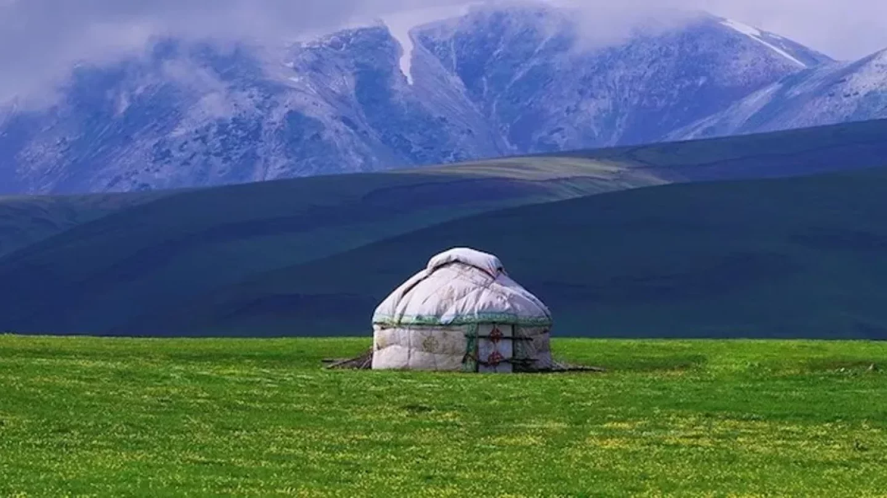
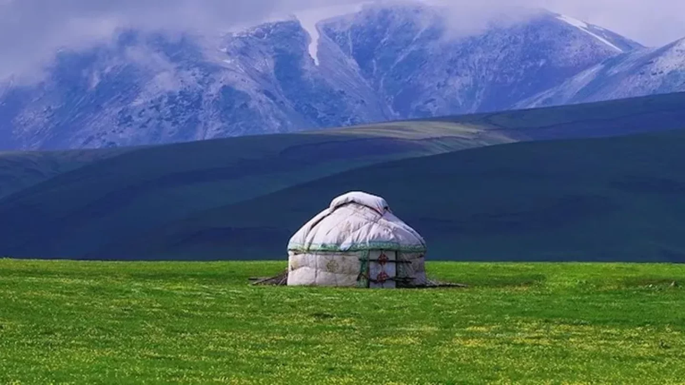

Kazakhstan is the heart of Eurasia
Kazakhstan is a country of amazing contrasts: modern cities, endless steppes, majestic mountains and rich cultural heritage. Here, ancient traditions are harmoniously intertwined with dynamic development and innovation. Kazakhstan ranks ninth in the world by area and is the largest country in Central Asia., located at the crossroads of Europe and Asia.
 

History of Kazakhstan
The history of Kazakhstan spans thousands of years, beginning with the ancient Sakas and Turkic Khaganates, through its incorporation into the Russian Empire and the Soviet Union, and ending with its independence on December 16, 1991. The key moments were the formation of the Turkic states, the era of the Great Steppes, the tragic periods of famine and repression during the Soviet period, and then the independent development of the country under the leadership of the first president, Nursultan Nazarbayev, and then Kassym-Jomart Tokayev.
Culture
The culture of Kazakhstan is a rich synthesis of nomadic traditions, Islam and European influences, formed on the basis of the country's centuries—old history and multinational composition. It includes unique arts, customs such as the yurt as a dwelling, the dombra as a musical instrument, and literary works such as the poem "Kyz-Zhibek." Modern Kazakh culture strives to preserve linguistic diversity and takes care of its cultural roots.
Nature
Kazakhstan impresses with a variety of natural landscapes: from endless steppes and deserts to the mountain ranges of Tien Shan and Altai. Here you can find picturesque canyons., stormy rivers, crystal clear lakes and protected forests.
Among the most famous natural sites — Lake Balkhash, unique in that its western part is fresh and its eastern part is salty; Charyn Canyon, which is called the "younger brother of the Grand Canyon"; and the mountainous lake Issyk-Kul, located among snow-capped peaks.
Kazakhstan is also known for its rich wildlife: Saiga antelopes, snow leopards, steppe eagles and many rare plant species live here. The country's national parks and reserves carefully protect this natural heritage., making Kazakhstan one of the most attractive destinations for ecotourism.